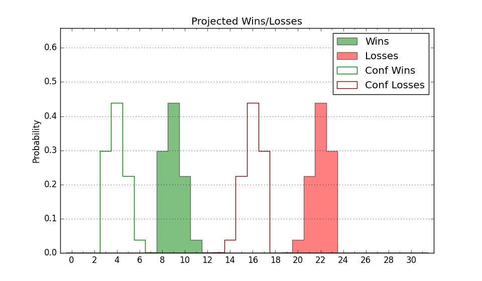

| Home | Game Probabilities | Conferences | Preseason Predictions | Odds Charts | NCAA Tournament |
| City: | Louisville, Kentucky | |
| Conference: | ACC (15th)
| |
| Record: | 3-13 (Conf) 8-19 (Overall) | |
| Ratings: | Comp.: -1.9 (181st) Net: -1.9 (181st) Off: 105.8 (162nd) Def: 107.7 (229th) SoR: 0.0 (148th) |
| Remaining | ||||||
|---|---|---|---|---|---|---|
| Date | Opponent | Win Prob | Pred. | |||
| 2/28 | @ Duke (13) | 3.5% | L 65-89 | |||
| 3/2 | Syracuse (91) | 36.7% | L 75-79 | |||
| 3/5 | Virginia Tech (56) | 25.1% | L 73-80 | |||
| 3/9 | Boston College (88) | 34.9% | L 75-80 | |||
| Previous | Game Score | |||||
| Date | Opponent | Win Prob | Result | Off | Def | Net |
| 11/6 | UMBC (298) | 83.7% | W 94-93 | -0.6 | -17.0 | -17.6 |
| 11/10 | Chattanooga (137) | 51.8% | L 71-81 | -16.8 | -3.8 | -20.6 |
| 11/15 | Coppin St. (360) | 95.6% | W 61-41 | -19.9 | 21.1 | 1.2 |
| 11/19 | (N) Texas (30) | 10.6% | L 80-81 | 21.7 | 4.3 | 26.0 |
| 11/20 | (N) Indiana (100) | 27.0% | L 66-74 | -13.7 | 9.2 | -4.5 |
| 11/26 | New Mexico St. (278) | 80.9% | W 90-84 | 8.1 | -17.8 | -9.8 |
| 11/29 | Bellarmine (311) | 85.6% | W 73-68 | -15.5 | 3.9 | -11.6 |
| 12/3 | @Virginia Tech (56) | 9.0% | L 68-75 | 1.4 | 13.3 | 14.8 |
| 12/9 | @DePaul (296) | 59.9% | L 68-75 | -15.8 | 3.1 | -12.8 |
| 12/13 | Arkansas St. (162) | 60.5% | L 63-75 | -23.5 | 2.1 | -21.4 |
| 12/17 | Pepperdine (214) | 70.9% | W 85-63 | 2.2 | 19.0 | 21.2 |
| 12/21 | Kentucky (21) | 14.9% | L 76-95 | -0.2 | -2.3 | -2.5 |
| 1/3 | @Virginia (49) | 8.4% | L 53-77 | 6.4 | -23.6 | -17.2 |
| 1/6 | Pittsburgh (52) | 24.8% | L 70-83 | 5.4 | -12.0 | -6.7 |
| 1/10 | @Miami FL (72) | 11.9% | W 80-71 | 11.3 | 23.3 | 34.6 |
| 1/13 | North Carolina St. (86) | 34.7% | L 83-89 | 12.4 | -10.2 | 2.2 |
| 1/17 | @North Carolina (10) | 3.1% | L 70-86 | 8.3 | 0.0 | 8.3 |
| 1/20 | @Wake Forest (25) | 5.7% | L 65-90 | 1.5 | -7.2 | -5.6 |
| 1/23 | Duke (13) | 10.9% | L 69-83 | 5.7 | -3.6 | 2.1 |
| 1/27 | Virginia (49) | 23.8% | L 52-69 | -11.8 | -0.4 | -12.3 |
| 1/30 | @Clemson (24) | 5.2% | L 64-70 | -3.4 | 26.7 | 23.3 |
| 2/3 | Florida St. (94) | 37.5% | W 101-92 | 17.7 | 0.3 | 18.0 |
| 2/7 | @Syracuse (91) | 14.6% | L 92-94 | 24.5 | -14.4 | 10.2 |
| 2/10 | Georgia Tech (146) | 54.3% | W 79-67 | 3.7 | 12.8 | 16.4 |
| 2/13 | @Boston College (88) | 13.6% | L 77-89 | 4.4 | -8.4 | -4.0 |
| 2/17 | @Pittsburgh (52) | 8.8% | L 59-86 | -4.0 | -17.4 | -21.4 |
| 2/21 | Notre Dame (129) | 50.6% | L 50-72 | -23.9 | -10.6 | -34.4 |
| Stats & Trends | |||||
|---|---|---|---|---|---|
| Current | Day | Week | Month | Season | |
| Composite | -1.9 | -1.3 | -2.0 | +1.0 | -2.6 |
| Comp Rank | 181 | -10 | -21 | +13 | -22 |
| Net Efficiency | -1.9 | -1.3 | -2.0 | +1.3 | -- |
| Net Rank | 181 | -10 | -21 | +20 | -- |
| Off Efficiency | 105.8 | -0.9 | -1.1 | +0.9 | -- |
| Off Rank | 162 | -16 | -25 | +6 | -- |
| Def Efficiency | 107.7 | -0.4 | -0.9 | +0.3 | -- |
| Def Rank | 229 | -11 | -18 | +27 | -- |
| SoS Rank | 67 | -13 | -9 | +16 | -- |
| Exp. Wins | 9.0 | -0.7 | -0.9 | -0.1 | -3.1 |
| Exp. Conf Wins | 4.0 | -0.7 | -0.9 | -0.1 | -2.2 |
| Conf Champ Prob | 0.0 | -- | -- | -- | -0.1 |

| Advanced Stats | ||
|---|---|---|
| Stat | Value | Rank |
| Off Eff FG % | 0.500 | 194 |
| Off Ast Ratio | 0.128 | 262 |
| Off ORB% | 0.297 | 113 |
| Off TO Rate | 0.152 | 209 |
| Off FT Ratio | 0.442 | 8 |
| Def Eff FG % | 0.516 | 213 |
| Def Ast Ratio | 0.149 | 231 |
| Def ORB% | 0.260 | 110 |
| Def TO Rate | 0.149 | 158 |
| Def FT Ratio | 0.317 | 159 |